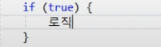
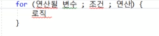
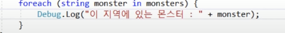
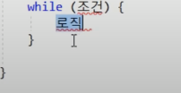

C#
변수들
종류와 예시
int level =5;
float strength = 15.5f;
string playerName="나검사";
isFullLevel = false;
그룹형 변수 배열 //int[3] 3은 배열의 크기를 의미함.

그룹형 변수 리스트 //<>안은 변수의 타입

조건문 true일 때 로직 실행 아니면 else

반복문 for //조건이 맞다면 연산을 계속하며 로직 실행

반복문 foreach // 파이썬의 for문이랑 비슷 그룹형 변수 탐색에 특화되어있음

반복문 while 조건이 맞다면 로직 계속 실행// 파이썬 while이랑 똑같은 느낌
